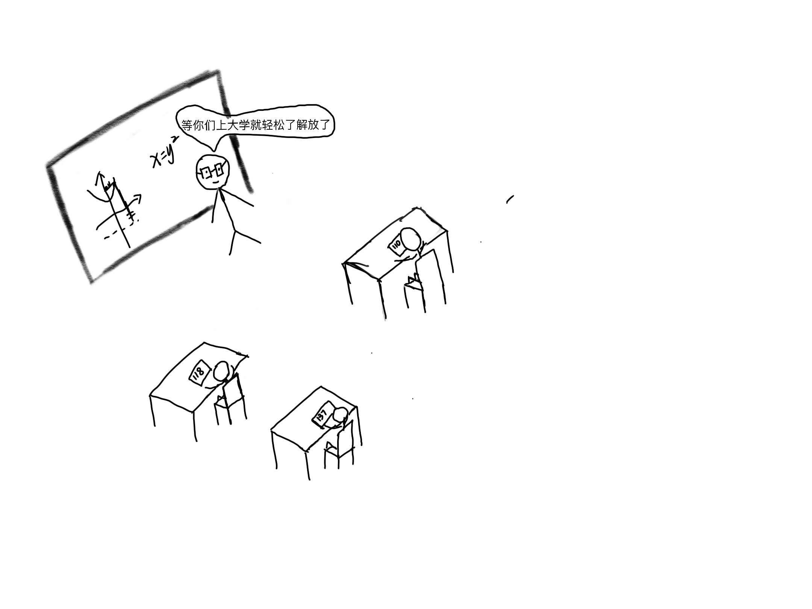
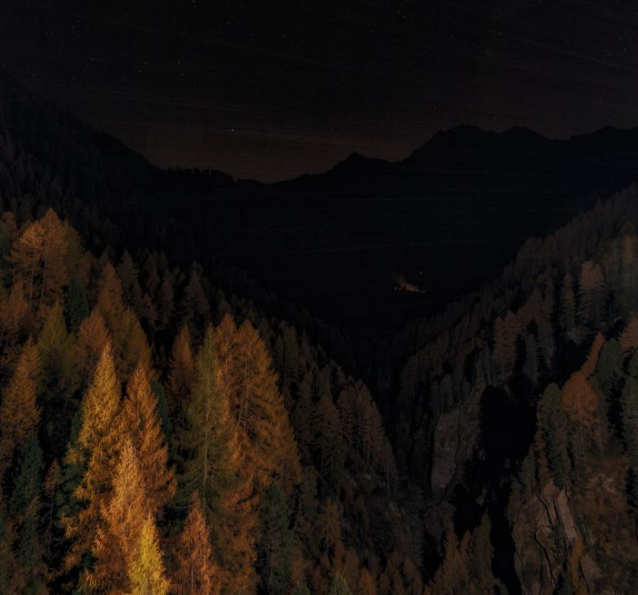
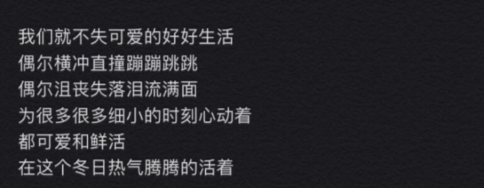
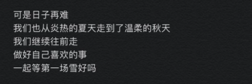

进入初中，似乎一切都是崭新的。认识了一些新朋友，老师也很有趣，我应该要开心才对，可是那段时间我并不是很快乐。 新环境里，我总是感觉自己“小小的”，但我并不甘心自己就这么小小的，我想发光，也想要被看见
「你听过世界上最大的谎言是什么?」
我必须得替全天下大学生发声
我听过最大的谎言——你上了大学就轻松了就解放了!

「事实是什么呢?」
虽然看似没有了高中的重重压力与约束
但总是会有重重隐形的压力朝你压来
很多你以前不去考虑的问题
现在都需要自己去解决
所有东西都需要自己安排
少女敏感多想的脆弱心理
经常压得人喘不过气

「你后悔吗?」
虽然我在上面说了这么多不好的
但是其实我还是很爱大学这段时光
它让我渐渐明白了我到底想要些什么
虽然过程很痛苦地被迫明白...
不停地被致郁也不停地被治愈
也在不停地长成自己心里认为的更成熟的人

「一切都是成长 包括热泪盈眶」
以前我是一个很爱抱怨的人
但现在更多的是寻找解决办法
以前我是很爱给自己贴标签的人
维持一些不那么贴合实际的人设
但现在我更爱自己也更爱做自己
以前每时每刻都想要跟朋友呆在一起一刻也不能分开
现在也能享受独处
不知不觉这已经是我到访人间的第十九年了
但更高兴我还对这个世界抱有与以前一样的期待与热情
我也很期待见到未来那个我
希望我在接下来的日子里
也还能兴致盎然的跟这个熠熠生辉的世界交手
